Студент: ТУЙИШИМЕ Тьерри
Группа: НКАбд-05-25
1 Цель работы [1](#цель-работы)
3 Выполнение лабораторной работы [1](#выполнение-лабораторной-работы)
5 Ответы на котрольные вопросы [8](#ответы-на-котрольные-вопросы)
Получить практические навыки работы с редактором Emacs.
Для данной работы, мне надо была установить Emacs:
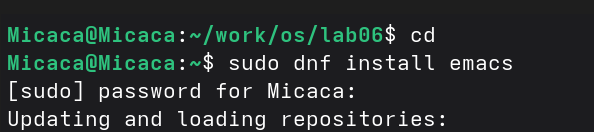
Рис. 1: Установка Emacs
Выполнив Emacs в командной строке, я открыла текстовый редактор:
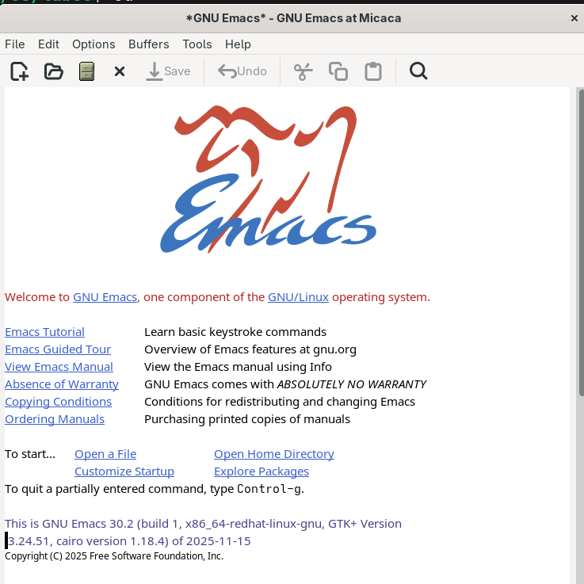
Рис. 2: Emacs
С помощью комбинации Ctrl-x Ctrl-f, создала файл lab07.sh:
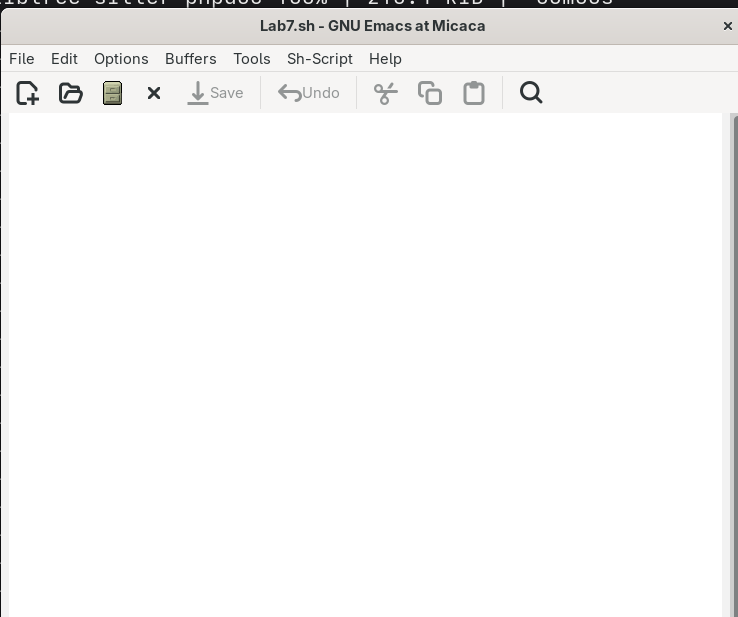
Рис. 3: Созданный файл
Я написала некоторый текст в этом же файле (lab07.sh). После этого сохранила файл с помощью комбинации Ctrl-x Ctrl-s:
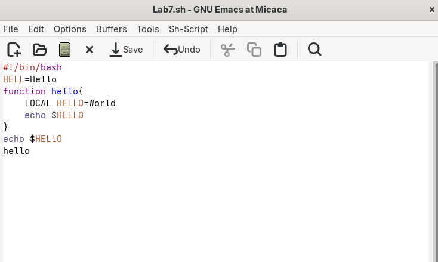
Рис. 4: текст в lab07.sh
Одной командой вырезала целую строку (С-k):
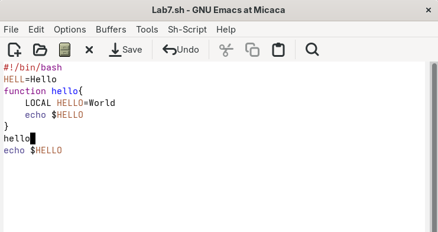
Рис. 5: Вырезание строки
С помощью C-y вставила эту строку в конец файла:
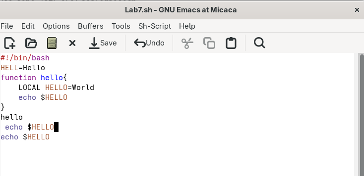
Рис. 6: Перемешение строку в конец файла
Выделила область текста (C-space):
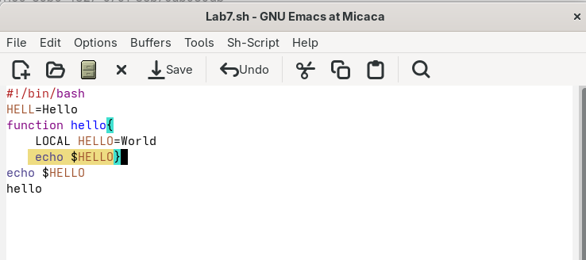
Рис. 7: Выделенный текст
Скопировала область в буфер обмена (M-w) и вставила ее в конец файла:
Рис. 8: копирование и вставка
Выделила эту же область и на этот раз вырезала её (C-w):
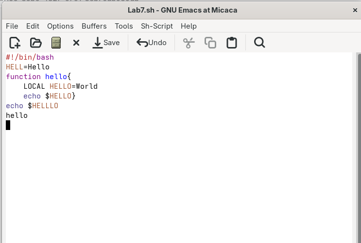
Рис. 9: ВЫрезанная область
С помощью C-/ отменила последнее действие:
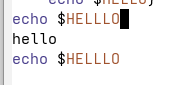
Рис. 10: отмена действие
С помощью C-a переместила курсор в начало строки:
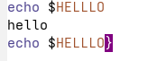
Рис. 11: Перемещение курсор в начало строки
С помощью C-e переместила курсор в конец строки:
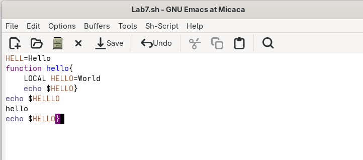
Рис. 12: Перемещение курсор в конец строки
Переместила курсор в начало и конец буфера с помощью M-< и M-> соответственно:
Рис. 13: Перемешение курсор в буфере
Выводила список активных буферов на экран с помощью C-x C-b:
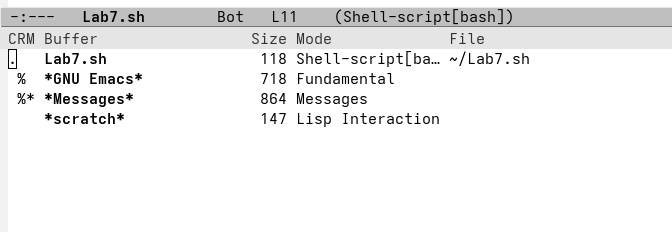
Рис. 14: Активные буферы
С помощью C-x o переместилась во вновь открытое окно со списком открытых буферов и переключилась на другой буфер:
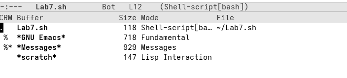
Рис. 15: список открытых буферов
С помощью C-x 0 закрыла окно со списком открытых буферов:
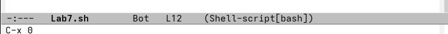
Рис. 16: Закрытие окно
Без вывода списка буферов, я переключилась между буферами:
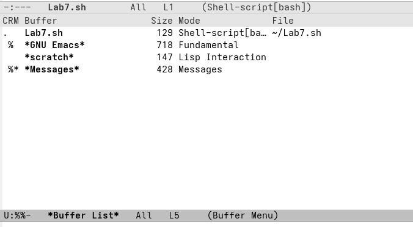
alt=“Переключение между буферами” />Рис. 17: Переключение между буферами
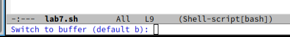
Рис. 18: Новый буфер
Поделила фрейм на 4 части. Сначала я разделила фрейм на два окна по вертикали (C-x 3), а затем каждое из этих окон на две части по горизонтали (C-x 2):
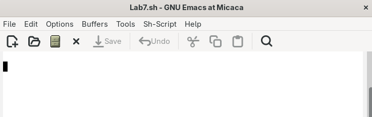
alt=“Фрейм разделённый на 4 окна” />Рис. 19: Фрейм разделённый на 4 окна
В каждом из четырёх созданных окон открыла новый буфер:
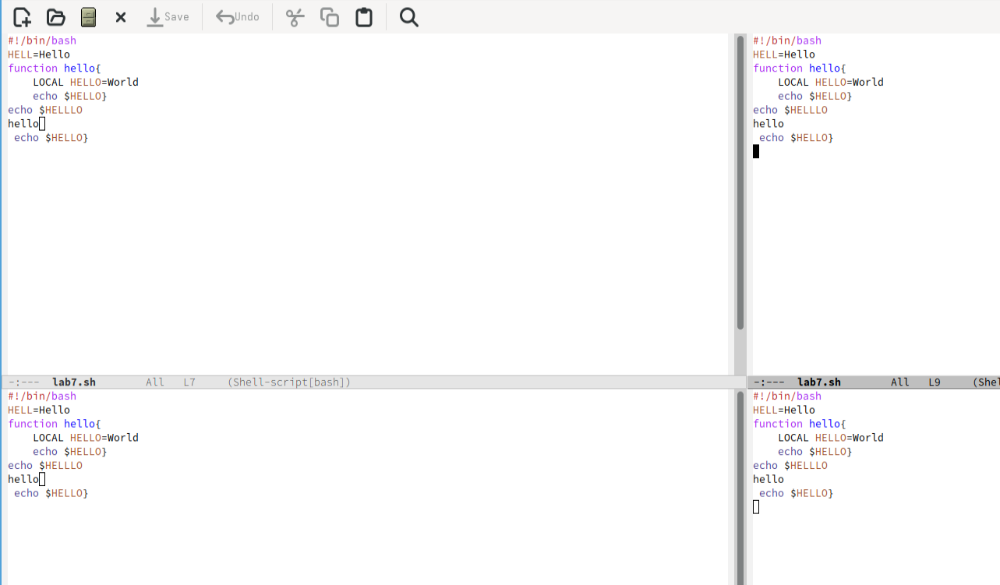
alt=“Новые буферы” />Рис. 20: Новые буферы
Переключилась в режим поиска (C-s) и искала Indent:
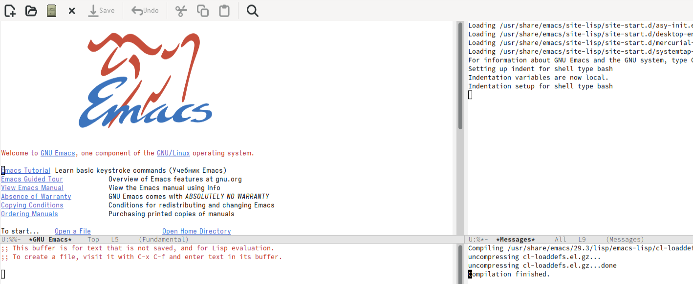
alt=“Режим поиска” />Рис. 21: Режим поиска
Переключалась между результатами поиска, нажимая C-s и вышла из режима поиска, нажав C-g:
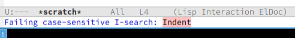
alt=“Переключение между результатами” />Рис. 22: Переключение между результатами
Перешла в режим поиска и замены (M-%), искала слово World, нажмала Enter, и заменила на Planet:
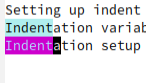
alt=“Режим поиска” />Рис. 23: Режим поиска
Нажав M-s o, я использовала другой режим поиска. Он отличается от предыдущего тем, что выводит результаты поиска в новом окне:
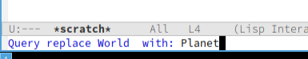
alt=“другой режим поиска” />Рис. 24: другой режим поиска
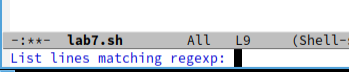
alt=“Результаты поиска” />Рис. 25: Результаты поиска
При выполнение данной работы я получила практические навыки работы с Emacs.
Emacs — один из наиболее мощных и широко распространённых редакторов, используемых в мире UNIX. Написан на языке высокого уровня Lisp.
Большое разнообразие сложных комбинаций клавиш, которые необходимы для редактирования файла и в принципе для работа с Emacs.
Буфер - это объект в виде текста. Окно - это область, в которой отображен буфер.
Да, можно.
Emacs использует буферы с именами, начинающимися с пробела, для внутренних целей. Отчасти он обращается с буферами с такими именами особенным образом — например, по умолчанию в них не записывается информация для отмены изменений.
Ctrl + c, а потом | и Ctrl + c Ctrl + |
С помощью команды Ctrl + x 3 (по вертикали) и Ctrl + x 2 (по горизонтали).
Настройки emacs хранятся в файле . emacs, который хранится в домашней дирректории пользователя. Кроме этого файла есть ещё папка . emacs.
Выполняет функцию стереть, думаю можно переназначить.
Для меня удобнее был редактор Emacs, так как у него есть командая оболочка. А vi открывается в терминале, и выглядит своеобразно.